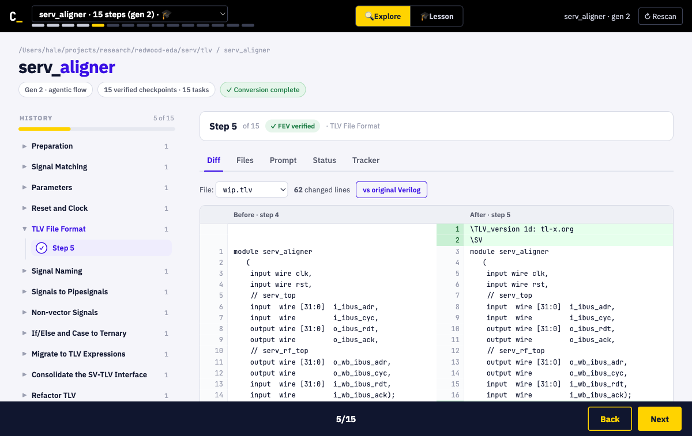
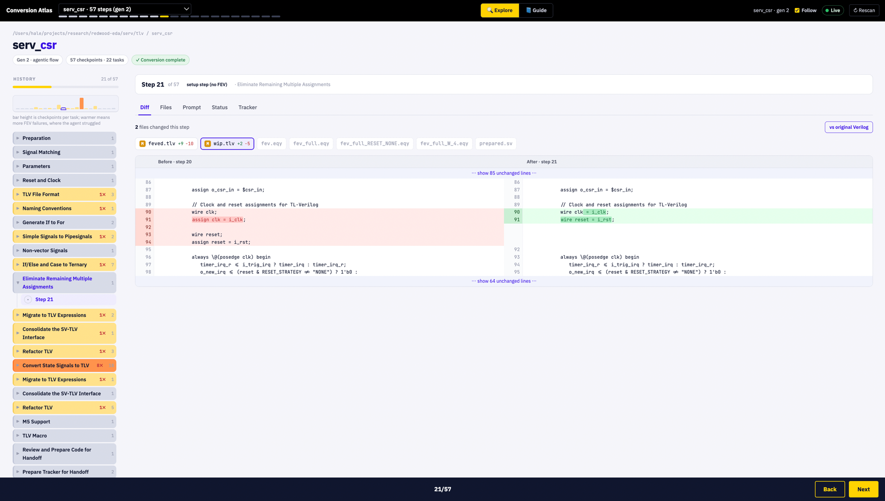

Using Conversion Atlas
A local control panel for the Verilog to TL-Verilog conversion flow. It watches the
conversion's history/ directory and shows what the AI agent did at each
step, live as it works. Read-only, no setup beyond Python.
Launch it
Run the server in your conversion repo and open the printed URL.
# auto-detect the conversion dirs in the current repo python3 server.py # or point it at a specific path python3 server.py path/to/serv/tlv
Then open http://127.0.0.1:8765. No dependencies beyond Python 3.8+, no build step.
1. Pick a module and walk its history
Choose a conversion from the dropdown in the top bar. The left panel is the History: every checkpoint the flow recorded, grouped by task. Click a step, or use the arrow keys, to move through the conversion.

2. See where the agent struggled
Above the timeline, the difficulty profile draws one bar per task. The bar height is the number of checkpoints in that task; the color gets warmer the more times FEV failed there. Tall and warm means the agent fought that task, which is where the instructions probably need work. Click a bar to jump to it.
Each step shows its real verification result: a green check if FEV passed, a red cross
with the reason if it failed (for example SandPiper failed or
Incremental FEV failed), and a neutral dot for setup steps with no FEV.
The module header reads complete only when the conversion actually finished.
3. Read each step
The tabs on the right cover one checkpoint at a time:
- Diff shows what changed since the previous step, side by side. The file row marks
which files changed (M added/modified, with line counts) and floats the FEV
.eqyto the top when the agent remapped signals to get FEV to pass. Inside a changed line, only the changed words are highlighted. - Files lets you open any file saved at that checkpoint, or in the working directory.
- Prompt shows the task instructions the agent was following.
- Status is the raw
status.jsonfor the step. - Tracker is the agent's running
tracker.mdnotes. - Sessions renders the agent's full conversation when a transcript is available.

4. Watch a conversion live
When a conversion is running on this machine, the tool follows it in real time over a
live connection to the history/ directory. The Live dot turns green,
new checkpoints appear and flash as they land, and a strip at the top tells you whether
the agent is working or possibly stuck (it has been retrying FEV without landing a
new checkpoint). Use the Follow toggle to keep the newest step in view, or turn it
off to inspect history without being pulled forward.
How the conversion works
The agent converts a Verilog module to TL-Verilog in many small steps. After each change
it runs fev.sh, which uses formal equivalence verification to prove the new
code behaves identically to the previous version. Only when that proof passes does the
flow record a checkpoint into history/NNN/ with the code, the FEV config, and
the status. That is why a clean conversion is a long sequence of individually proven
steps, and why a task that took many checkpoints is one the agent found hard.
This tool only reads that directory. It never changes your files.